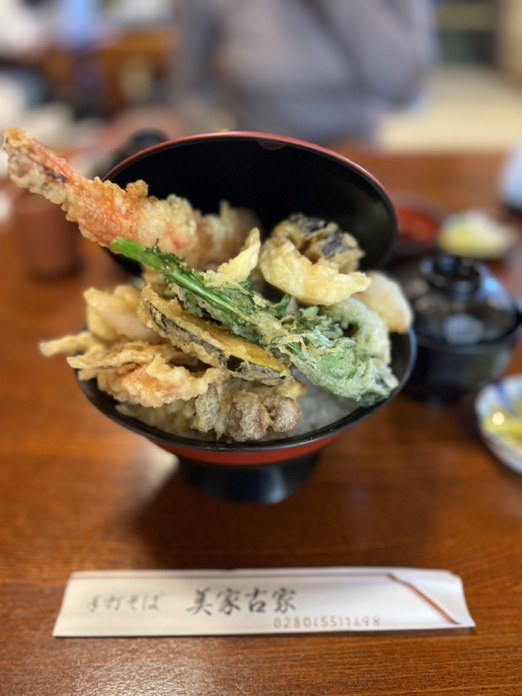
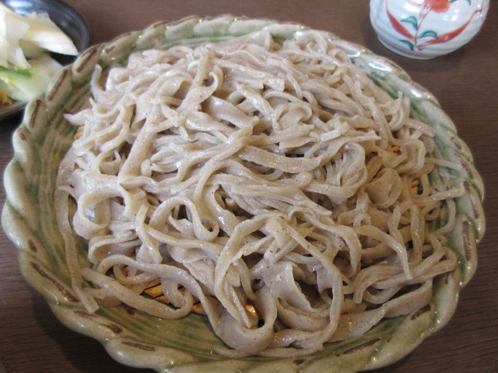
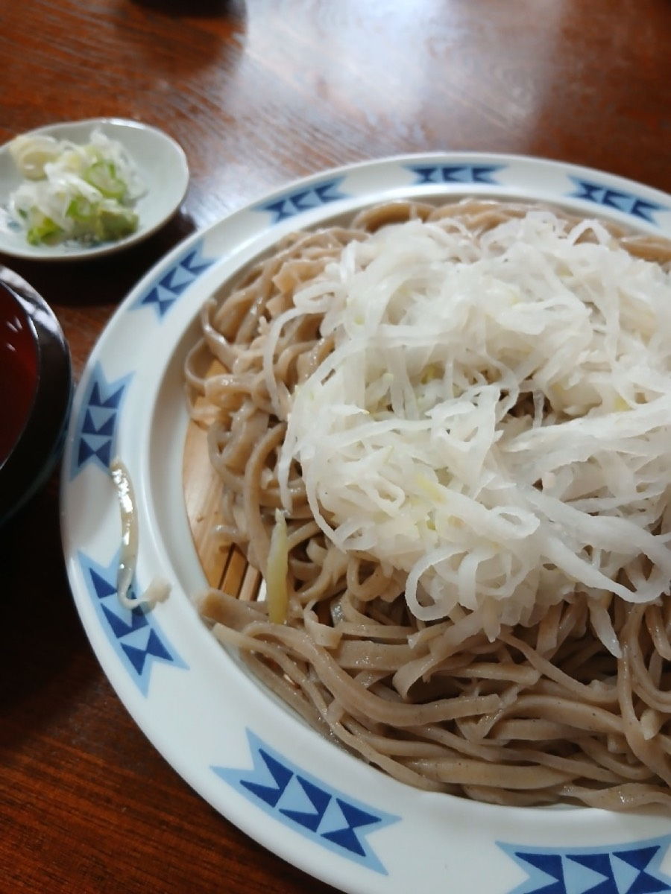
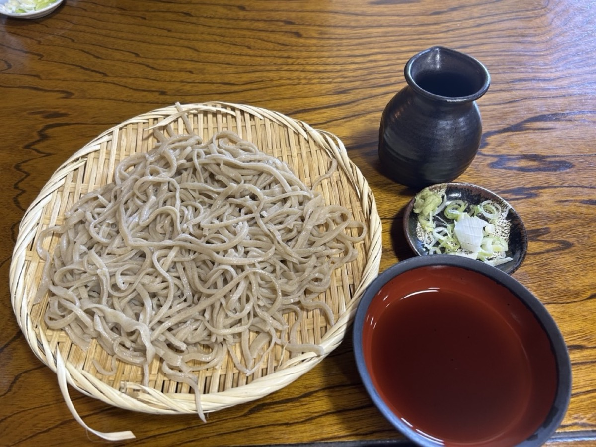
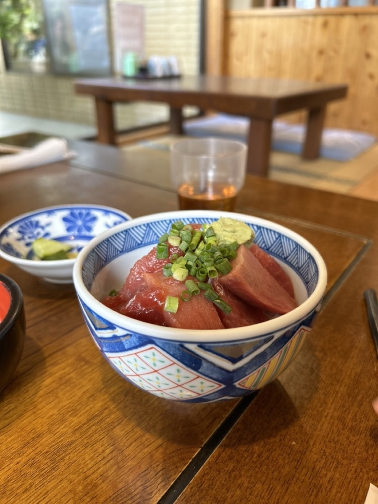
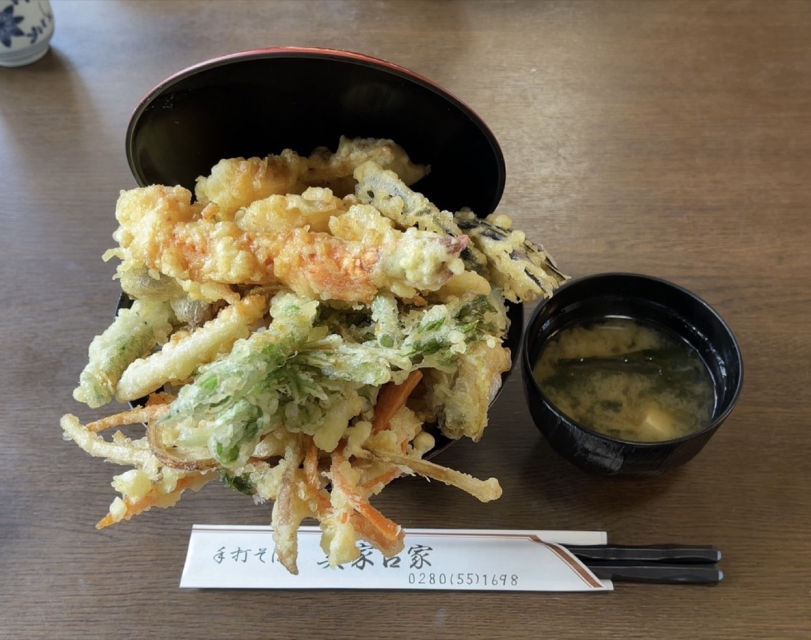
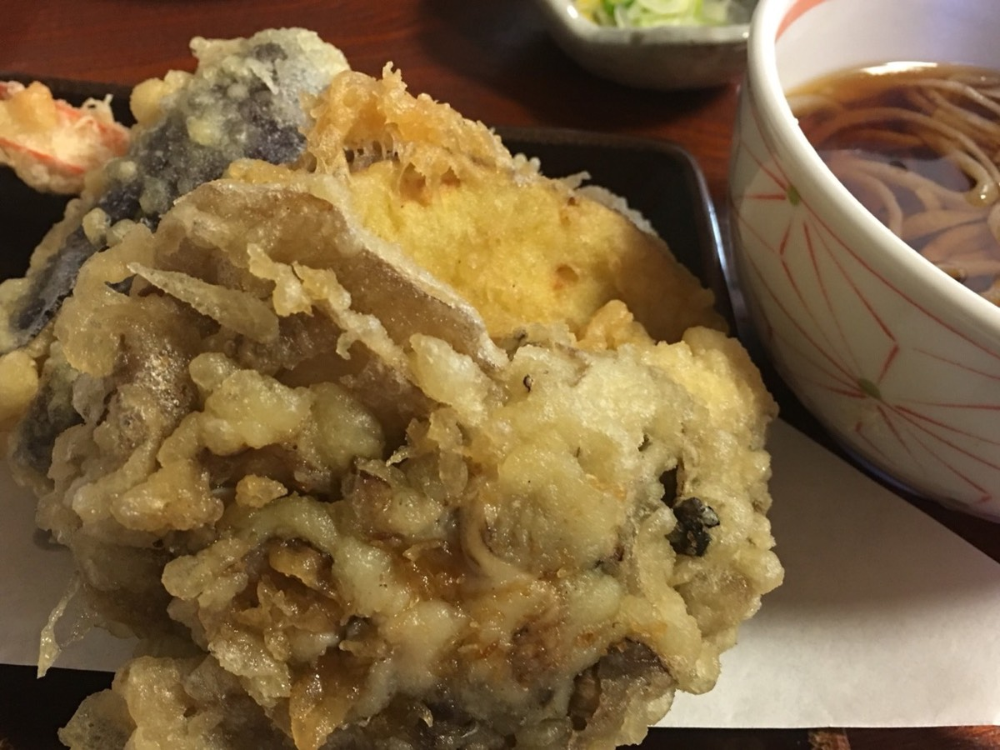
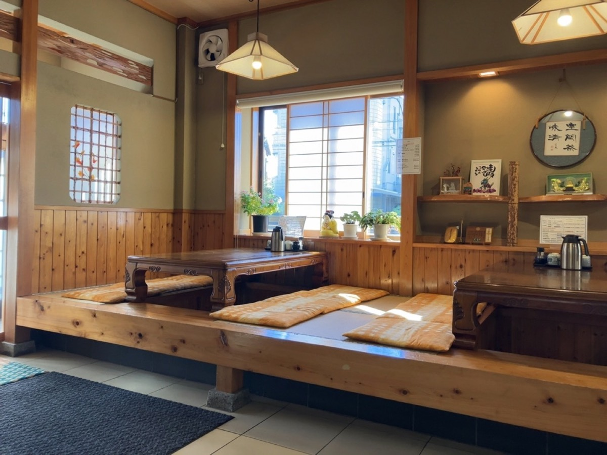
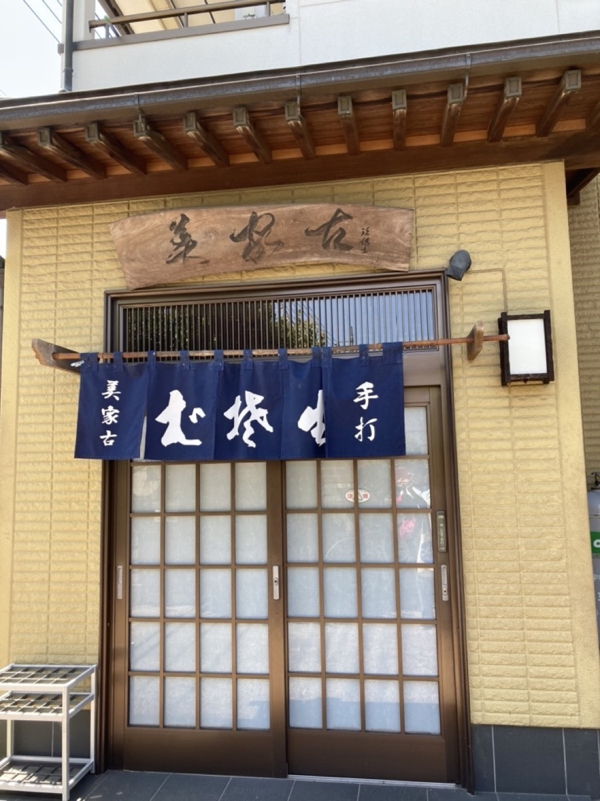

天丼
海老と野菜の天ぷらを重ねてお出しします。海老の本数はお好みでお申し付けいただけます。大きいサイズにはお味噌汁が付きます。
太さは一本ずつ揃いません。手で切っておりますので、細いところと幅の広いところが混じります。そのぶん、噛んだときの歯ごたえに幅が出ます。つゆは薄めに仕立てておりますので、たっぷりお付けください。



そば・うどんは、半盛り・並盛・中盛り・大盛りの四段からお選びいただけます。天ぷらや丼と合わせるときは、半盛りでちょうどよく召し上がっていただけます。迷われましたら、お声がけください。ちょうど食べきれる量をご案内いたします。
混み合う時間帯や、ご注文の量によっては、お待ちいただくことがございます。
天ぷらは、ご注文をいただいてから揚げております。器に入りきらないことがございますが、そのままお出ししております。タレは控えめにかけておりますので、お好みで足していただけるよう卓上にご用意しております。

海老と野菜の天ぷらを重ねてお出しします。海老の本数はお好みでお申し付けいただけます。大きいサイズにはお味噌汁が付きます。

赤身と中とろを軽く漬けにして、ぶつ切りのまま盛っております。そばと合わせて召し上がる方が多い一品です。

かき揚げを揚げたてのままのせております。ミニサイズもご用意しておりますので、そばと合わせてもお召し上がりいただけます。

海老を使わず、野菜の天ぷらだけでお作りいたします。その日の野菜でお出ししておりますので、季節によって中身が変わります。
お座敷と掘りごたつ、カウンター席をご用意しております。座敷は机の間を広くとっておりますので、荷物を置いてゆっくりお召し上がりいただけます。全席禁煙です。
ご予約は承っておりません。お昼どきは満席になることがございますので、そのまま店内でお待ちいただくかたちになります。
お急ぎのときは、そばのみのご注文を先にお出ししております。ご注文の際にお申し付けくださいませ。
天ぷらや丼をご一緒に召し上がる場合は、そばを半盛りにされる方が多くいらっしゃいます。量に迷われましたら、遠慮なくお声がけください。


「蕎麦は平らな手打ち麺でかなり固め。コシがとても強く、手打ち感満載の麺切は一本一本にバラエティがあり、意外な食感が楽しめます。」
お客様の声より
「注文の際に、更に天ぷらを追加しようとしたら、お店の人に多過ぎると親切にアドバイスいただきました。」
お客様の声より
「ご飯よりマグロが多い丼！このマグロの質と量で1500円はかなりコスパ良し。」
お客様の声より
JR宇都宮線 野木駅から、およそ460m（徒歩でおよそ6分）です。民家と同じ造りの建物ですので、紺の暖簾と「手打そば」の看板を目印にお越しくださいませ。
| 店名 | 手打そば 美家古家（みやこや） |
|---|---|
| 住所 | 〒329-0111 栃木県下都賀郡野木町丸林371-11 |
| 電話 | 0280-55-1698 |
| 営業時間 | 11:30〜14:00 そばが無くなり次第、閉店とさせていただきます |
| 定休日 | 木曜日 |
| ご予約 | 承っておりません |
| お席 | カウンター席・お座敷・掘りごたつ／全席禁煙 |
| 駐車場 | 店の奥と、道路を挟んだ向かい側にございます |
| お支払い | 現金のみ |
| アクセス | JR宇都宮線 野木駅から約460m（徒歩約6分） |